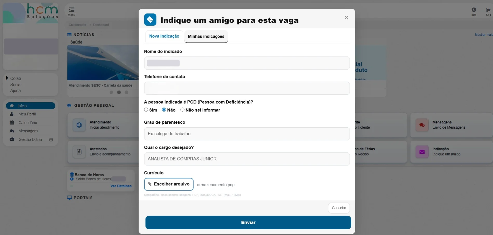
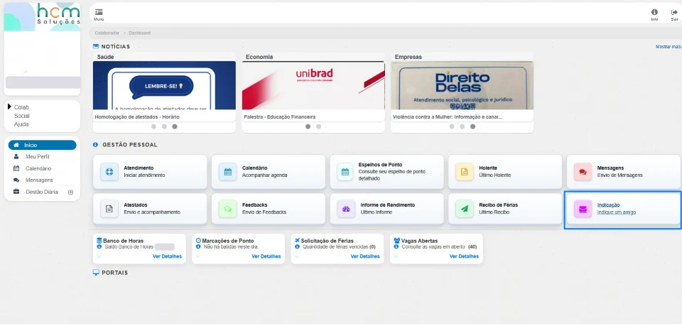
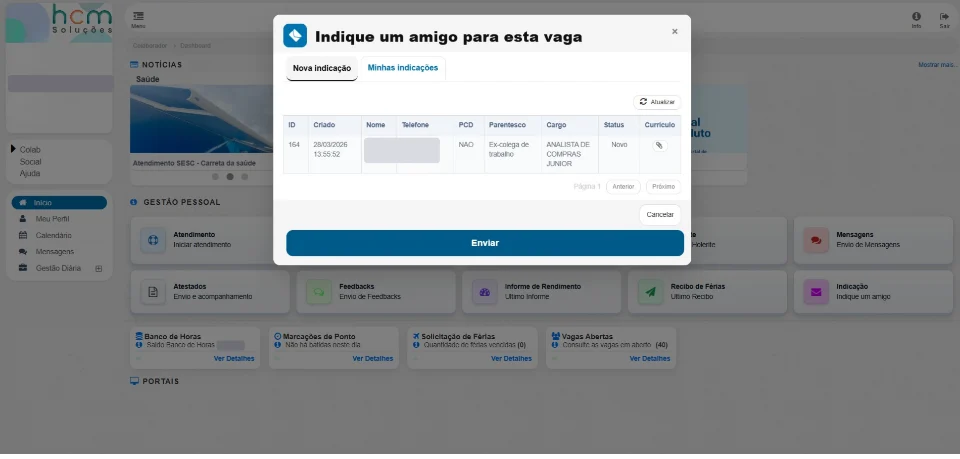
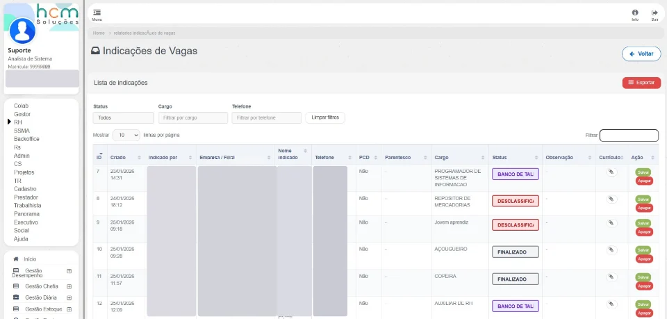

Indicação para vagas
Recrutamento por indicação em duas jornadas integradas: o colaborador indica candidatos e acompanha o histórico; o RH tria, atualiza status e exporta os registros em um painel operacional.
- Contexto
- Aplicação de RH com recrutamento interno
- Perfis
- Colaborador · RH
- Meu papel
- Desenvolvimento full-stack: back-end, banco de dados e interface
- Stack
- PHP MVCjQueryBootstrapDataTables

Jornada dupla
O colaborador indica e acompanha; o RH opera e audita.
Operação em tabela
Filtros instantâneos, edição inline, exclusão e exportação.
Robustez em legado
Compatível com variações de schema entre ambientes.
Contexto e problema
Sem um fluxo digital, indicações chegam por canais informais e se perdem.
- Pouca rastreabilidade e dados despadronizados.
- Nenhum histórico para quem indicou.
- Sem filtros nem exportação para uso gerencial.
Solução
Criei o modal do colaborador e o painel do RH sobre a mesma base, com status padronizados de funil.
- Colaborador: formulário validado com nome, telefone, PCD, parentesco, cargo e currículo obrigatório (imagem, PDF, DOC/DOCX ou TXT de até 10 MB), além da aba de histórico.
- Painel do RH: até 500 registros recentes com filtros em tempo real por status, cargo e telefone.
- Funil padronizado: Novo, Banco de talentos, Desclassificado e Finalizado, editáveis direto na tabela junto com observações.
- Operações: exclusão e exportação do recorte filtrado para CSV e XLS.
- Back-end resiliente: detecção de colunas opcionais e restrição por empresa; saída HTML sanitizada.
Telas
Capturas do sistema em produção. Dados pessoais e de clientes foram ocultados (LGPD). Clique nas imagens para ampliar.






Tecnologias
- Back-end: PHP em MVC com sessão, perfil e consultas SQL com joins para enriquecer os dados de quem indicou.
- Front-end: HTML, CSS, JavaScript, jQuery e Bootstrap (modais e abas).
- Tabela: DataTables com paginação, busca e filtros customizados.
- Exportação: CSV e XLS gerados no navegador com
Blob. - Onboarding: tour guiado com conclusão registrada por usuário.
Desafios técnicos
Banco em evolução
Checagem de existência de colunas antes de usá-las.
Filtro sobre select editável
Extensão customizada da busca do DataTables.
Observações longas
Modal dedicado para editar e reaplicar o texto.
Estado visual
Cores por status do funil com classes dinâmicas.
Resultados
As indicações passaram a ter dados padronizados, histórico para o colaborador e operação rápida para o RH.
Rastreabilidade
Histórico e status de cada candidato.
Eficiência
Edição inline e filtros para grandes volumes.
Robustez
Validações e compatibilidade com diferentes schemas.
Governança
Escopo por perfil e por empresa.